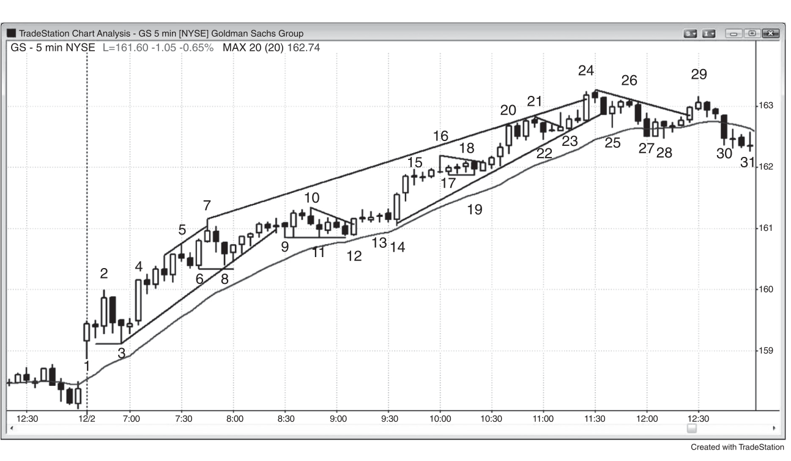
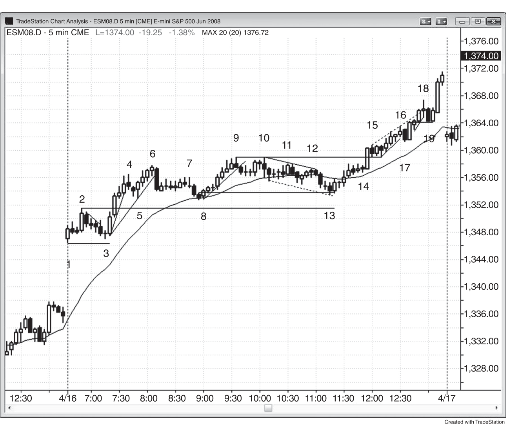
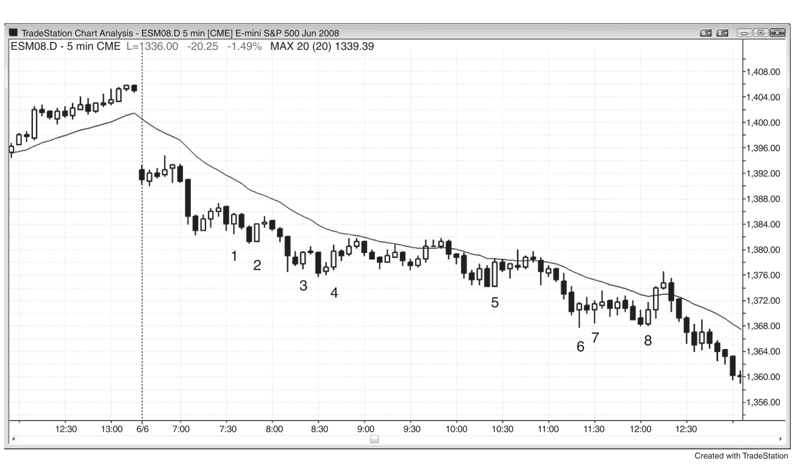
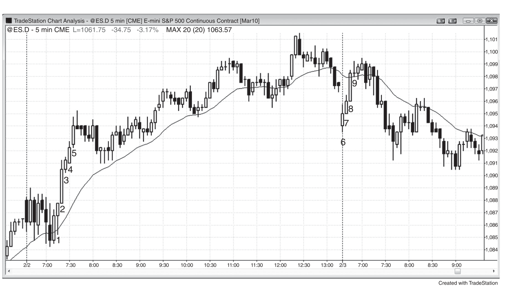
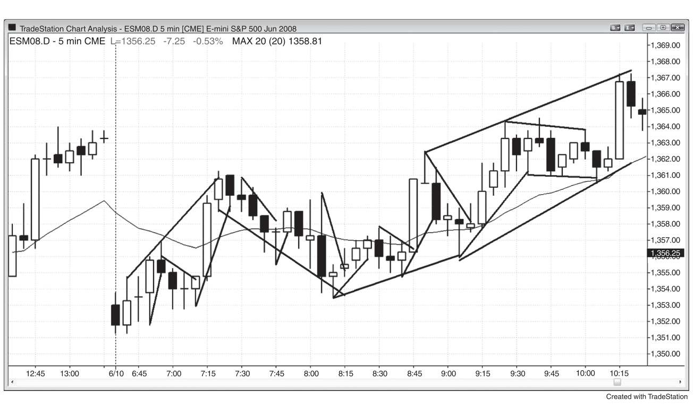

Trends趋势 · 第 III 部分 · 原版英文全文。正文可划线/批注/记进度;图为原书 K 线图。
Example of How to Trade a Trend
When the market is in a trend, traders should look for any reason to enter. The simple existence of a trend is reason enough to enter at least a small position at the market. Here are some other reasonable approaches that use stop entry orders:
- Buying a high 2 pullback to the moving average in a bull trend.
- Selling a low 2 pullback to the moving average in a bear trend.
- Buying a wedge bull flag pullback in a bull trend.
- Selling a wedge bear flag pullback in a bear trend.
- Buying a breakout pullback after a breakout from a bull flag in a bull trend.
- Selling a breakout pullback after a breakout from a bear flag in a bear trend.
- Buying a high 1 pullback in a strong bull spike in a bull trend, but not after a
- buy climax.
- Selling a low 1 pullback in a strong bear spike in a bear trend, but not after a
- sell climax.
- When a bull trend is very strong, buying on a stop above a prior swing high.
- When a bear trend is very strong, selling on a stop below a prior swing low.
Entering using a limit order requires more experience reading charts, because the trader is entering in a market that is going in the opposite direction to the trade. However, experienced traders can reliably use limit or market orders with these potential setups:
- Buying a bull spike in a strong bull breakout at the market, at the close of every bull trend bar in the spike, or on a limit order at or below the low of the prior
- bar (entering in spikes requires a wider stop and the spike happens quickly, so this combination is difficult for many traders).
- Selling a bear spike in a strong bear breakout at the market, at the close of
- every bear trend bar in the spike, or on a limit order at or above the high of the prior bar (entering in spikes is difficult for many traders).
- Buying the close of the first bear bar in a bull spike.
- Selling the close of the first bull bar in a bear spike.
- In a bull trend, buying at a bull trend line or at a prior swing low (a potential
- double bottom bull flag).
- In a bear trend, selling at a bear trend line or at a prior swing high (a potential
- double top bear flag).
- Buying at or below a low 1 or 2 weak signal bar on a limit order in a possible
- new bull trend after a strong reversal up or at the bottom of a trading range.
- Shorting at or above a high 1 or 2 weak signal bar on a limit order in a possible
- new bear trend after a strong reversal down or at the top of a trading range.
- Buying at or below the prior bar on a limit order in a quiet bull flag at the moving
- average.
- Shorting at or above the prior bar on a limit order in a quiet bear flag at the
- moving average.
- Buying below a bull bar that breaks above a bull flag, anticipating a breakout
- pullback.
- Selling above a bear bar that breaks below a bear flag, anticipating a breakout
- pullback.
- When trying for a swing in a bull trend, buy or buy more on a breakout test,
- which is an attempt to run breakeven stops from an earlier long entry.
- When trying for a swing in a bear trend, sell or sell more on a breakout test,
- which is an attempt to hit breakeven stops from an earlier short entry.
- Buying at a fixed number of ticks down from the high in a bull trend. For ex-
- ample, buying a two-, three-, or four-point pullback in a bull trend in the Emini when the average daily range has been about 12 points. Also, if the biggest pullback in the first couple of hours was 10 ticks, buying about an eight- to 12-tick pullback.
- Selling at a fixed number ticks up from the low in a bear trend. For example,
- selling a 50 cent bear rally in GS when the average daily range has been about $2.00. If the largest pullback in the first couple of hours was 60 cents, selling about a 50 to 70 cent pullback.
- Scaling into the direction of the trend as the market moves against you. If you scale in, plan out in advance what size each order has to be to keep your total risk the same as with a typical trade. It is easy to find yourself with too large a position and a protective stop that is too far away, so be very careful.
- In a bull trend that has not pulled back to the moving average in 20 or more bars,
- buy at the moving average on a limit order, and scale in lower. For example, if there is a strong bull trend in the Emini where the market has been above the moving average for 20 or more bars, buy with a limit order at one tick above the moving average. Buy more one, two, and maybe three points lower. If scaling in, consider exiting the entire position at the first entry price, but if the bull trend is strong, look to exit on a test of the high.
- In a bear trend that has not pulled back to the moving average in 20 or more
- bars, sell at the moving average on a limit order and scale in higher. For example, if there is a strong bear trend in the Emini where the market has been below the moving average for 20 or more bars, sell with a limit order at one tick below the moving average. Sell more one, two, and maybe three points higher. If scaling in, consider exiting the entire position at the first entry price, but if the bear trend is strong, look to exit on a test of the low.
- In a strong bull trend, buy on the close of the first bear trend bar that has a
- close below the moving average.
- In a strong bear trend, sell on the close of the first bull trend bar that has a close
- above the moving average.
- In a strong bull trend, a pullback is a small bear trend. The bulls will expect
- that a breakout below a prior swing low in this small bear trend will fail, and they will buy there with a limit order.
- In a strong bear trend, a pullback is a small bull trend. The bears will expect
- that a breakout above a prior swing high in this small bull trend will fail, and they will short there with a limit order.
- A trader can always be long, short, or flat. At any moment during a trend, only two of those choices are compatible with being a successful trader. If the market is in a bull trend, successful traders are only long or flat. If it is in a bear trend, they are either short or flat. A tiny fraction of traders have the ability to consistently make money by trading against a trend, and you should assume that you are not part of that group. Unfortunately, most traders starting out go for years believing that they are, and they consistently lose money month after month and wonder why. You now know the answer.
Every type of market does something to make trading difficult. The market is filled with very smart people who are trying as hard to take money from your account as you are trying to take money from theirs, so nothing is ever easy. This includes making profits in a strong trend. When the market is trending strongly with large trend bars, the risk is great because the stop often belongs beyond the start of the spike. Also, the spike grows quickly, and many traders are so shocked by the size and speed of the breakout that they are unable to quickly reduce their position size and increase their stop size, and instead watch the trend move rapidly as they hope for a pullback. Once the trend enters its channel phase, it always looks like it is reversing. For example, in a bull trend, there will be many reversal attempts, but almost all quickly evolve into bull flags. Most bull channels will have weak buy signal bars and the signals will force bulls to buy at the top of the weak channel. This is a low probability long trade, even though the market is continuing up. Swing traders who are comfortable taking low probability buy setups near the top of weak bull channels love this kind of price action, because they can make many times what they are risking, and this more than makes up for the relatively low probability of success. However, it is difficult for most traders to buy low probability setups near the top of a weak bull channel. Traders who only want to take high probability trades often sit back and watch the trend grind higher for many bars, because there may not be a high probability entry for 20 or more bars. The result is that they see the market going up and want to be long, but miss the entire trend. They only want a high probability trade, like a high 2 pullback to the moving average. If they do not get an acceptable pullback, they will continue to wait and miss the trend. This is acceptable because traders should always stay in their comfort one. If they are only comfortable taking high probability stop entries, then they are correct in waiting. The channel will not last forever, and they will soon find acceptable setups. Experienced traders buy on limit orders around and below the lows of prior bars, and they will sometimes take some short scalps during the bull channel. Both can be high probability trades, including the shorts, if there is a strong bear reversal bar at a resistance level, and some reason to think that a pullback is imminent.
With so many great ways to make money, why do most traders lose? It is because there are even more ways to make mistakes. One of the most common is that a trader begins with one plan and, once in the trade, manages it based on a different plan. For example, if a trader just lost on his past two long swing trades and now buys a third, he might be so afraid of losing again that he scalps out, only to watch the trade turn into a huge trend. Swing traders need these big wins to make up for the losses, since swing trading often is less than 50 percent successful. If traders do not hold on for the swing, they will not be getting the big wins that they need, and they will lose money. Something opposite to this can happen to scalpers. They might have taken a profitable scalp, but became sad when the trade turned into a huge trend and they watched from the sidelines. When they see another scalp, they take it, but once it reaches their profit target, they decide that the trade could turn into a swing trade, just like last time, and they do not exit. A few minutes later, the market comes back, hits their stop, and they take a loss. This is because most scalps are high-probability trades, and when the edge is large and obvious, the move is usually small and brief, and not the start of a big swing. The best way to make money is to have a sound strategy, and then stick to the plan. For most beginning traders, the plan should be some kind of swing trade, because the winning percentage needed to be a successful scalper is much higher than most traders can maintain for the long term.
Once traders take a position, they then have to decide how to manage it. The most important decision that they have to make is whether they are looking for a scalp or for a swing, both of which are discussed in detail in the second book, as is trade management. Only the most experienced traders should consider scalping, because the risk is sometimes greater than the potential reward. This means that they have to win about 70 percent of the time, which is impossible for anyone except an extremely good trader. You should assume that you will never be that good, because that is the reality. However, you can still be a very profitable trader. If traders are trading the Eminis at a time when the average daily range is about 10 to 15 points, they generally have to risk about two points. For example, if they are buying in a bull trend, their protective stop should be about two points below their entry price. Alternatively, their stop can be one tick below the low of the signal bar, which usually is still about two points. Some traders will risk five points or more on a swing trade if they feel confident that the trend will eventually resume. This can be a profitable approach for traders who understand the trader’s equation: trade only when the chance of success times the potential reward is significantly greater than the chance of failure times the risk.
If a trader is scalping, then he is trying to make between one and three points on the trade. However, some scalpers think that two- and three-point trades are small swings, and consider a scalp to be a one-point trade. Although there are many trades every day where a trader can risk two points to make one point and have an 80 percent chance of success, there are many other setups that look similar but have only a 50 percent chance of success. The problem that most traders have is distinguishing between the two, and even a couple of mistakes a day can mean the difference between making money and losing money. Most traders simply cannot draw the distinction in real time, and end up losing money if they scalp. A trader who scalps only the two or three best setups a day and trades enough volume might be able to make a living as a scalper, but he might also find it difficult to watch the market for hours and be ready to quickly place a trade when one of the rare, brief setups unfolds.
The better way for beginning traders to make money is to swing their trades. They can enter all at once, or can press their trades by scaling in as the market continues in their direction. This means that they are adding to their positions as their earlier entries have growing profits. They can either exit all at once, or scale out as the trade goes their way. For example, if they buy early in a bull trend, their initial stop is two points, and they are confident that the trade will work, they should assume that the probability of success is at least 60 percent. Because of that, they should not take any profits until the trade has gone at least two points. The mathematics of trading are discussed in the second book. A trader should exit a trade only when the chance of success (here, 60 percent or higher) times the potential reward is significantly greater than the chance of failure (here, 40 percent or less) times the risk. Since the protective stop is two points below the entry price, the risk is two points. This means that the trader’s equation begins to become favorable only when the reward is two points or more. Therefore, if traders take a smaller profit, they will lose money over time, unless they believe that their probability of success is about 80 percent, which is rarely the case. When it is, an experienced trader can scalp part out at a one-point profit and still make money while using a two-point stop. Most traders should never risk more than their reward.
So, how should traders swing their trades in that bull trend? This is addressed more in the second book. Swing trading is much more difficult than it appears when a trader looks at a chart at the end of the day. Swing setups tend to be either unclear or clear but scary. After a trader sees a reasonable setup, he has to take the trade. These setups almost always appear less certain than scalp setups, and the lower probability tends to make traders wait. A trend begins with a breakout either from a trading range or after a reversal of the current trend. When there is a potential reversal and it has a strong signal bar, it usually comes when the old trend is moving fast in a strong, final, climactic spike. Beginning traders invariably believe that the old trend is still in effect, and they probably lost on several earlier countertrend trades today and don’t want to lose any more money. Their denial causes them to miss the early entry on the trend reversal. Entering as the breakout bar is forming, or after it closes, is difficult to do because the breakout spike is often large, and traders have to quickly decide to risk much more than they usually do. As a result, they often end up choosing to wait for a pullback. Even if they reduce their position size so that the dollar risk is the same as with any other trade, the thought of risking two or three times as many ticks frightens them. Entering on a pullback is difficult because every pullback begins with a minor reversal, and they are concerned that the pullback might be the start of a deep correction, their stop will be hit, and they will lose money. They end up waiting until the day is almost over. When they finally decide that the trend is clear, there is no longer any time left to place a trade. Trends do everything that they can to keep traders out, which is the only way they can keep traders chasing the market all day. When a setup is easy and clear, meaning it has a high probability of success, the move is usually a small, fast scalp. If the move is going to go a long way, it has to be unclear and difficult to take, to keep traders on the sidelines and force them to chase the trend.
Since a bull trend has trending highs and lows, then every time the market reaches a new high, traders should raise their protective stop to one tick below the most recent low. This is called trailing their stop. Also, if their profit is large enough, they should consider taking partial profits as the market goes above the most recent high. Lots of traders do this and that is why trends often pull back after reaching a new high. The pullback very often goes below the original entry price, and inexperienced swing traders will have tightened their stops to the breakeven price and will get stopped out of a great trend trade. Once the market tests the original entry price and then goes to a new high, most traders would then raise their stops to at least their entry price because they would not want the market to come back to test it a second time after reaching a new high following the first test. Others would put it below the low of the pullback that just tested their original entry.
Some traders will allow pullbacks below the signal bar as long as they believe that their premise of a bull trend is still valid. For example, assume that the average range in the Emini has been about 10 to 15 points lately, and they bought a high 2 pullback in a bull trend on the 5 minute chart. If the signal bar was two points tall, they might be willing to hold on to their position even if the market falls below the low of the signal bar, thinking that the pullback might evolve into a high 3, which is a wedge bull flag buy setup. Other traders would exit if the market falls below the signal bar and then buy again if a strong high 3 buy signal sets up. Some might even buy a position that is twice as large as their first, because they see the strong second signal as more reliable. Many of these traders would have bought just a half-size position on the high 2 buy signal if they thought that the signal did not look quite right. They were allowing for the possibility of the high 2 failing and then evolving into a wedge bull flag, which might even look stronger. If it turned out to be, they would then feel comfortable trading their usual full size.
Other traders trade half size when they see questionable signals, exit if their protective stop is hit, and then take the second signal with a full size if the signal is strong. Traders who scale in as a trade goes against them obviously do not use the signal bar extreme for their initial protective stop, and many look to scale in exactly where other traders are taking losses on their protective stops. Some simply use a wide stop. For example, when the average daily range in the Emini is less than about 15 points, a pullback in a trend is rarely more than seven points. Some traders will consider that the trend is still in effect unless the market falls more than between 50 to 75 percent of the average daily range. As long as a pullback is within their tolerance, they will hold their position and assume that their premise is correct. If they bought a pullback in a bull trend and their entry was three points below the high of the day, then they might risk five points. Since they believe that the trend is still in effect, they believe that they have a 60 percent or better chance of an equidistant move. This means that they are at least 60 percent certain that the market will go up at least five points before falling five points to their protective stop, which creates a profitable trader’s equation. If their initial buy signal in the bull pullback came at five points below the high, then they might risk just three points, and they would look to exit their long on a test of the high. Since the pullback was relatively large, the trend might be a little weak, and this might make them take profits below the trend high. They would try to get at least as much as they had to risk, but they might be willing to get out just below the old high if they were concerned that the market might be transitioning into a trading range, or possibly even reversing into a bear trend.
At some point, selling pressure will be strong enough to convert the trend into a trading range, which means that a pullback might fall below the most recent low. Experienced traders have a good sense of when the market is transitioning from a trend into a trading range, and many will exit the remainder of their positions when they believe that it is about to happen. They might then trade the trading range using a trading range approach, which means looking for smaller profits. This is discussed in the second book. They might instead hold on to part of their long positions until either the close or when the market flips into always-in short. If it does, they would then either exit their longs or reverse to short. Very few traders can reverse consistently, and most prefer to exit their longs and then reassess the market, and maybe take a break before looking to go short.

There are countless ways to trade any day, but when there is a trend like the bull trend in GS shown in Figure 18.1, traders should try to swing at least part of their trade. I had extensive discussions years back with a trader who excelled on days like this. He bought early and then determined his initial risk (how far his protective stop was from his entry price). He then took half of his position off once the market reached twice his initial risk and held the other half until there was a clear reversal. If there never was a strong reversal, he exited in the minutes before the close. After every new high, he tightened his stop to below the most recent higher low, since as long as the trend kept making higher highs and lows, it was still strong. If it stopped making higher lows, it was beginning to weaken.
There is one sure way to consistently lose money on a day like this, and all traders know it. Successful traders avoid it, but beginners are irresistibly drawn to it. They see the market as constantly overdone. The most recent bar is always at the top of the computer screen and there surely can’t be enough room up there to go higher, and there clearly is a lot of room below. Also, they know trends have pullbacks, so why not short every reversal for a scalp, and then go long on the pullback? Even if the trade is a loser, the loss is not big. They don’t buy the pullback when it finally comes, because the market might be reversing into a bear trend, and the buy setup does not look strong enough. Also, since they were short and the market did not quite reach their scalper’s profit target, they were rooting for the market to go down just a little bit more, and therefore were not expecting, and actually not wanting, the pullback to end just yet. They saw bars 7, 10, 18, 20, 21, and 24 as reversals that were likely to fall far enough to offer at least a scalper’s profit and as potential highs of the day. However, experienced traders know that 80 percent of reversal attempts fail and become bull flags, and they held long, took some profits on their earlier longs, or bought more as the pullback progressed. The beginners don’t accept this premise and they take small losses all day, and by the end of the day are shocked that they have lost so much. They have been successful all their lives in other careers and are very smart. They see trading gurus on television who look more like clowns and used car salesmen than like formidable adversaries, so they are confident that they can trade at least as well as those so-called experts. They are right in their assessment of the abilities of those pundits, but wrong in their assumption that those people are successful traders. They are entertainers, and the networks hire them to create an audience that will result in advertising dollars. The networks are companies, and like all companies, their goal is to make money, not to help the viewer in any way. Beginners do not stop losing until they are able to stop themselves from looking for shorts in bull trends (or bottoms in bear trends). They can start winning only when they accept that each top is the start of a bull flag.
Some of the material that follows will be covered later in books 2 and 3, and is included here because it is important in trend trading.
Great swings usually begin with weak setups, like the two-bar reversal that began at bar 3. Both bars were small dojis, and they followed a large two-bar reversal top. The setup that leads to the breakout is usually weak enough to trap traders out. Traders wait for a higher-probability setup after the breakout occurs, and miss the initial breakout. Entering either on the low-probability setup or on the higherprobability ones after the breakout are both mathematically sound approaches.
Most traders would have decided that the always-in direction was up by either bar 2 or bar 4. That means that they believed that the market was in a bull trend and they therefore would look for sensible reasons to buy, and there were many. They could have bought as bar 4 broke above bar 2, on the close of bar 4, or at one tick above its high. They could have placed a limit order to buy at or below the low of the next bar and the lows of the next several bars. They would have been filled below bar 5. Some would have placed orders to buy a small pullback to the midpoint of the prior bar, maybe 20 cents down. They also would have looked to buy a bear close because they believed that attempts to reverse should fail. The move from bar 4 to bar 5 was a tight channel, so an attempt to break to the downside was likely to fail. They could have bought below bar 5, on the close of the small bear trend bar that followed, or above it as a failed breakout below a bull micro channel. Bar 7 was a breakout pullback short but traders expected it to just lead to a pullback. The market broke below the bull micro channel on the move below bar 5, and the rally to bar 7 was a breakout pullback higher high. Traders expected the reversal to fail and some had limit orders maybe 50 cents down and in the area of the bar 6 low, expecting a double bottom bull flag. Some traders had their protective stops below bar 6 since it was a strong bull trend bar, and a strong bull trend usually would not fall below such a bar. Therefore, buying just above its low was a low-risk, highreward trade with at least a 50 percent chance of success. They also could have bought above the bull reversal bar that followed bar 8 since it was a double bottom bull flag setup and a high 2 long (bar 6 was the high 1).
Bar 9 was another break below a bull micro channel, and traders expected it to fail. Some would have had limit orders to buy at the low of the prior bar as the micro channel was growing, and they would have been filled on bar 9. Other traders bought above the bar 9 high as a failed breakout below the bull micro channel.
Bar 11 was another high 2 buy setup, but the market had been mostly sideways for over 10 bars, and the bars were getting small. Although this was also a double bottom buy signal, the tight trading range could have continued, so many traders would have waited to see if there was a third push down and then looked to buy above the wedge bull flag, which some traders would have seen as a triangle, since it would have been sideways instead of down. These traders got long on bar 12 and above bar 12. After the breakout from this bull flag, the market went sideways for several bars and created a breakout pullback buy entry above bar 13 and again on the bar 14 outside up strong bull trend bar. This was a high 2 entry bar since bar 13 was a high 1 entry and the pullback below the next bar was a second leg down in this four-bar-long tight trading range.
Some traders bought as the market broke above bar 10, which they saw as a breakout of a trading range in a bull trend. Traders also bought the close of bar 14 and above its high. The next bar had good follow-through, which was a sign of strength, and traders therefore bought its close and above its high. There was a two-bar pause, creating a small breakout pullback bull flag, and traders bought the breakout above the bar after bar 15.
Bar 16 was a doji top but there was no prior bear strength and no significant selling pressure, and the bar was small and weak compared to the bar 14 bull spike. Traders expected the reversal attempt to fail and therefore placed limit orders to buy at and below its low. Bar 17 was a failed top buy signal, and bar 19 was a small second push down and therefore a high 2 buy setup. Traders bought as the market went above its high and above the high of the bull bar that followed it, which was a two-bar reversal buy setup.
The move up to bar 20 was another strong bull spike. Traders would have bought at and below the low of the prior bar, on the close of the bull trend bars, and on the close of the first bear trend bar, like the bar after bar 20. Since bar 20 was an especially large bull trend bar in a mature trend, it was enough of a buy climax to warrant a larger correction, one that might go sideways or down to the moving average. There was less urgency for the bulls, who were expecting a high 2 or a triangle.
Bar 21 was a one-bar final flag reversal attempt but the up momentum was strong. Traders expected another bull flag and not a reversal. Some bought below its low while others waited to see if there would be a high 2, a wedge bull flag, or a triangle. Bar 22 was another double bottom and therefore a high 2 buy setup. Traders placed stop orders to go long above its high and above the high of the inside bar that followed it. Some saw bar 23 as a high 2 buy setup with the bar after bar 20 as the signal for the high 1. Others saw it as a wedge bull flag with the first push down as the bear bar after bar 20. It was also a breakout pullback buy setup for the breakout above the bull flag that occurred on the prior bar.
Bar 24 was a very important bar. It was the third push up and third consecutive buy climax after the spike up from bar 14 (the top of the spike was the first push). The channel in a spike and channel bull often ends on a third push up and is then followed by a correction. Also, bar 24 was a particularly strong bull trend bar in a protracted bull trend. This is just the bar that strong bulls and bears were waiting for. Both saw it as a possible temporary end of the trend, and they expected it to be a brief opportunity to sell before a larger pullback developed. Both expected a correction to have at least two legs and 10 bars and to penetrate the moving average. The bulls were selling to take profits and the bears were selling to initiate shorts. Both sold at the close of bar 24, above its high, at the close of the next bar, and below its low.
The bulls thought that the market might be transitioning into a trading range, and that there was a reasonable chance that they could buy again lower. Bar 28 was a two-legged correction to the moving average and therefore a high 2 buy setup. It was also the first touch of the moving average all day, and therefore a 20 gap bar buy setup, and was likely to be followed by a test of the bull high. The bears took profits on their shorts here and the bulls bought for another leg up.
The biggest prior pullback of the day since the rally began at bar 3 was 75 cents on the pullback to bar 8. Some traders expected the largest pullback of the day to come after 11:00 a.m. or so and therefore had limit orders to go long at 75 cents below the most recent swing high. They might have scaled in at 75 cents below that and maybe risked up to a little more than twice the size of that first pullback, or about $1.60. Throughout the day, traders would have expected pullbacks to remain less than the first and they would have had limit orders to buy any pullback that was about half as big, or maybe 40 to 50 cents. The pullback to bar 11 was 40 cents, which meant that traders tried to buy a 50 cent pullback and when they did not get filled on the second attempt on the bar before bar 12, they decided to chase the market up and bought above the high of bar 12. Some traders saw the bars 9 and 11 double bottom and would have placed limit orders to buy just above its low, maybe 30 cents down from the high. Traders would then have to determine where a worst-case protective stop would be. They should pick a level where they would no longer want to be long. An obvious location would have been below the bar 8 low, since a bull trend has a series of higher highs and lows, and after each new high, the bulls expect the next pullback to stay above the most recent higher low. Since they were planning to get long at $161.05, 30 cents down from the high, and they would need to risk to around $160.35 or 70 cents lower, they had to determine the position size. If they normally risk $500 or less on a trade, they could have bought 600 shares of GS. Since they were risking 70 cents and they always should have a reward that is at least as large as their risk, their profit target should have been at least 70 cents above their entry. This was clearly a strong trend day at this point and the probability of success was therefore at least 60 percent, and maybe higher.
On a strong trend day like this, it was far better to use a generous profit target. Traders should not have tried to take any profit until the market went to at least twice their risk, or $1.40 above their entry price. They would have placed a limit order to sell half of their position at $162.45. After the bar 12 strong bull trend bar broke above the triangle (some thought of it as a wedge bull flag), they could have tightened their protective stop to just below its low at $161.05, reducing their risk to less than 20 cents. After the bar 14 strong bull trend bar breakout, they could have tightened their stop to just below its low, reducing their risk to a penny. Their limit order to take profits on 300 shares would have been filled on bar 20, giving them $420. At that point, they could have tightened their protective stop to below the bar 19 start of that most recent bull spike. If the stop was hit, they would have made about 80 cents on their remaining 300 shares. At this point, they would have held their position until there was a clear reversal down or until the close. When you have a large profit, it is usually wise to exit in the final hour or so on any setup that could lead to a larger pullback and then maybe look to get long again once that two-legged pullback is complete. The bear reversal bar at bar 24 was a third push up and was followed a buy climax bar, so the market could finally have been getting ready to pull back to the moving average. If traders exited below its low, they would have made $2.00, or $600, on their remaining 300 shares. If they held until the close, they would have made $375 on those shares. The market never even clearly became always-in short.
Many traders would have bought on a limit order at one tick above the moving average as bar 27 tested the moving average, since it was a 20 gap bar buy setup, and held for a test of the high. Some traders would have bought on the close of bar 27 because it was the first bear trend bar with a close below the moving average. Although it was the second bar of a two-bar bear spike and a breakout below bar 25, the bears needed follow-through before believing that the market had flipped to always-in short, and instead got a bull inside bar for the next bar. This was the bottom of a developing trading range and the test of the beginning of the channel up from the bar 22 pullback from the four-bar bull spike up to bar 20. The bull bar that followed bar 27 also closed above the moving average. Some bulls would have bought on the close of that bull bar, while others would have bought at one tick above its high. Their entry would have been three bars later. Traders would also have bought above the high of the inside bar that followed bar 28, since it was a high 2 buy signal, ending two legs down from the high of the day. It was also a small wedge bull flag where bar 25 was the first push down and bar 27 was the second.
A pullback is a minor trend in the opposite direction, and traders expect it to end soon and for the major trend to resume. When GS began its second leg down from the bar 24 high, it formed a lower high at bar 26 and the bears needed it to form a series of lower highs and lows to be able to convince the market that the trend had reversed to down. Some therefore shorted as the market broke out below the bar 25 swing low, hoping for a series of large bear trend bars. Instead, bar 25 was a small bear trend bar and there was no follow-through. In fact, the rally up showed that most traders instead bought the breakout below bar 25 because they believed that the sell-off was only a pullback and doomed to be a failed attempt at reversing the major trend into a bear trend. Since most reversal attempts fail, the first pullback in a strong bull trend that has a second leg down usually is bought aggressively as it breaks below the prior swing low, and many bulls bought this one, even though it took several bars before they could turn the market up again. This was a sign that they were not as aggressive as they could have been. This told traders that the pullback might evolve into a larger trading range, which it ultimately did.
Many traders use trend lines for entering and exiting. Some would have taken partial profits near the high of bar 7 as it moved above the trend channel line. They also would have bought as bar 9 fell below the bull trend line and above the bar 9 high, since they saw bar 9 as a failed channel breakout. Bar 12 broke above a small bear trend line, and traders bought as the bar moved above the line since they saw that as the end of the pullback and the resumption of the bull trend. Bar 24 was the third push up in the channel that followed the two-bar bull spike that began at bar 14, and some traders would take profits on their longs above that line, even on the strong bull close of bar 24. The bar was an especially large bull trend bar and the third consecutive bull climax since bar 14, and the market was likely to have a more complex correction. What better place to take profits than on a buy vacuum test of a trend channel line on the third consecutive buy climax? The move down to bar 28 broke below the bull trend line and held below it for many bars, so traders wondered if a larger correction might be starting. This made many quicker to take profits. When the move up from bar 28 could not produce any strong bull trend bars, traders thought that the market might be in a trading range and therefore took profits on the bar 29 test of the bar 26 lower high. This was a potential double top bear flag and lower high trend reversal. The next bar was a bear trend bar, which indicated that the bulls were becoming less aggressive and the bears were becoming stronger.
When a bull trend is very strong, traders can buy for any reason if they use a wide enough stop, and many traders like to buy on breakouts above prior swing highs. However, buying pullbacks before the breakout generally offers more reward, smaller risk, and a higher probability of success. The breakout traders will place buy stops at one tick above the old high and will be swept into their longs as the market breaks above the old high. The most common reason for traders failing to buy a pullback is that they were hoping for a larger or better-looking pullback. Many pullbacks have bear signal bars or follow two or three bar bear spikes, making traders believe that the bull trend needs to correct more before resuming. However, it is important to get long when there is a strong bull trend, and a trader should place a buy stop above the prior swing high when the trend is very strong, in case the pullback is brief and the trend quickly resumes. Reasonable entries included the bar 4 breakout above the bar 2 high and the breakouts up to bar 10 as it moved above bar 7, the bar 14 spike as it went above bar 10, and the bar 20 spike as it moved above bar 16. These old highs are often the highs of higher time frame bars, like on the 15 or 60 minute charts, so the entry is usually a breakout above the high of a prior bull trend bar on these higher time frame charts. Since higher time frame charts have larger bars and the protective stop is initially below the signal bar, the risk is greater and traders should trade smaller size, unless they are only looking for a quick, small scalp. After the trend has gone on for a while, the pullbacks become deeper and last for more bars. Once the two-sided trading becomes apparent, the strong bulls begin to take profits above swing highs rather than buying new positions, and the strong bears begin to scale into shorts as the market goes above the old highs. For example, the bear bar after bar 20 and the bar 22 bear bar were signs of selling pressure, so most traders would have used the move above the bar 21 high to take profits rather than to buy more. At some point, most traders will see new highs as shorting opportunities and not simply as areas to take profits. Although many traders shorted below the bear bar after bar 24, most traders still believed that the trend was up and that there would be a test of the bull high after a pullback. Until there has been a strong bear move that breaks well below the bull trend line, the strong bears usually will not dominate the market.
Since this was a trend day, a trader would ideally swing part, take profits along the way, and then go back to a full position size on every pullback. However, most traders cannot continue to hold part of their trade for a swing and also repeatedly scalp the other part. Traders instead should try to put on a full position early and not take additional signals, and instead scale out of their profits as the market works higher. There are many ways to do this. For example, if they bought early on and had to risk about $1.00 (probably less), they might have taken a quarter off after a $1.00 profit and another quarter off at $2.00, and maybe a third quarter at $3.00, and held onto the final quarter until either a strong sell signal formed or until the end of the day. It was better if they instead waited until the market rallied $2.00, or twice their initial risk, before taking their initial profit, because they had to sure that they were adequately compensated for taking that initial $1.00 risk. It does not matter how they did it, but it was important to have taken some profit along the way in case the market reversed down. However, since traders subjected themselves to risk, they must resist the temptation to exit with too small a reward. As long as the trend is good, it is always best to try to resist taking profits until the market has gone at least twice as far as your initial risk. If traders are out of half of their position but then see another strong buy signal, they might put part or all of the other half back on, at least for a scalp; but most traders should simply stick to their original plan and enjoy their growing profit.
With all of these buy signals, traders could have accumulated an uncomfortably large long position if they kept adding new longs, which they should not have done. Instead, they should have simply held their position until a possible end of the trend, like at bar 24, or they could have scalped out part after each new high as soon as a bar had a weak close, like at bars 16, 21, or 24. Then they could have put the scalp portion back on when they saw another buy signal. They would have continued to hold their swing portion until the end of the trend.
When did traders see this day as a trend day? Aggressive bulls thought that the gap up and strong bull trend bar had a reasonable chance of leading to a trend from the open bull trend day, and they might have bought on the close of bar 1 or one tick above its high. Their initial protective stops were one tick below the bar 1 low, and they planned on holding part or all of the position until the close or until a clear short signal formed.
Other traders always look for double bottoms on gap up days, and they would have bought above the two-bar reversal that began at bar 3, which formed an approximate double bottom with bar 1 or with the low of doji bar that followed it.
Bar 4 was a strong bull trend bar that broke above the opening range and closed above the bar 2 high. Some traders bought at one tick above the bar 2 high, and others bought on the close of bar 4 or one tick above its high. This breakout bar was a statement by the bulls that they owned the market, and most traders at this point believed that the market was always-in long. For the time being, the best place for a protective stop was one tick below its low, but since that was almost a dollar lower, traders had to choose a small enough position size so that they were trading within their comfort zone.
Most traders saw the day as a bull trend day by bars 5 or 7, and probably as soon as bar 4 closed. Once traders believe the day is a trend day, if they are flat, they should buy a small position either at the market or on any small pullback. Traders could have placed limit orders to buy below the low of the prior bar and to buy at a certain number of cents down, like maybe 20, 30, or 50 cents. Others would have looked to buy above a high 2 on a stop or on a moving average pullback. Buying above the bar 8 two-bar reversal was a reasonable long, as was the wedge bull flag (some saw it as a triangle) that ended in a two-bar reversal at bar 12. The protective stop would still have been below the bar 4 low or maybe below its midpoint. Traders need to trade small enough so that their risk is within their normal risk tolerance. Other traders had their stops below the bars 6 and 8 double bottom, and if they got stopped out but the market then formed another buy signal and they believed that the bull trend was still intact, they would have bought again.
The most important thing that traders must force themselves to do, and it is usually difficult, is as soon as they believe that the day is in a trend, they must take at least a small position. They must decide where a worst-case protective stop would be, which is usually relatively far away, and use that as their stop. Because the stop will be large, their initial position should be small if they are entering late. Once the market moves in their direction and they can tighten their stop, they can look to add to their position, but they should never exceed their normal risk level. When everyone wants a pullback, it usually will not come for a long time. This is because everyone believes that the market will soon be higher, but they do not necessarily believe that it will be lower anytime soon. Smart traders know this and therefore they start buying in pieces. Since they have to risk to the bottom of the spike, they buy small. If their risk is three times normal, they will buy only one-third of their usual size to keep their total dollar risk within their normal range. When the strong bulls keep buying in small pieces, this is buying pressure, and it works against the formation of a pullback. The strong bears see the trend, and they too believe that the market will soon be higher. Since they think it will be higher soon, they will stop looking to short. It does not make sense for them to short if they think that they can short at a better price after a few more bars. So the strong bears are not shorting and the strong bulls are buying in small pieces, in case there is no pullback for a long time. What is the result? The market keeps working higher. Since you need to be doing what the smart traders are doing, you need to buy at least a small amount at the market or on a one- or two-tick pullback or a 10 or 20 cent pullback, and risk to the bottom of the spike (the low of bar 4 for most traders, but some would have put their stops below the low of bar 3). Even if the pullback begins on the next tick, the odds are that it won’t fall far before smart bulls see it as value and buy aggressively. Remember, everyone is waiting to buy a pullback, so when it finally comes it will only be small and not last long. All of those traders who have been waiting to buy will see this as the opportunity that they wanted. The result is that your position will once again be profitable very soon. Once the market goes high enough, you can look to take partial profits or you can look to buy more on a pullback, which will probably be at a price above your original entry. The important point is that as soon as you decide that buying a pullback is a great idea, you should do exactly what the strong bulls are doing, and buy at least a small position at the market.
After the market moved above the bar 7 high, many traders trailed their protective stops below the most recent swing low, which was at bar 8. As long as the market holds above the most recent swing low, the trend is likely still very strong. If it starts to make lower lows, the market could be transitioning into a trading range or even a bear trend. In either case, traders would then trade it differently from how they would trade a one-sided market (a trend).
Bulls would continue to buy pullbacks all day long, and after the market went to another new swing high, they would move their protective stop to below the most recent swing low. For example, once the market moved above the bar 16 high, traders tightened their protective stops to below the bar 19 low. Many traders moved their stops to breakeven once there was a pullback that tested their entry price and then the market reached a new high. They did not want the market to come back down to their entry price a second time, and if it did, they would have believed that the trend was not strong.
Bar 24 was the third push up from the spike up to bar 15 (bar 21 was the second push up), so the market was likely to correct for a couple of legs sideways to down. The bar after it was a bear inside bar so the market might have reversed down at this point, especially since this would have been a failed breakout above the trend channel line. The market made a couple of attempts to pull back to the moving average earlier in the day, so it was reasonable to assume that it might succeed this time. This was a good place to take profits on the swing longs. Aggressive traders might have gone short for a scalp, but most traders would have waited to see if a 20 gap bar buy signal formed at the moving average.
Should traders try to take most of these entries? Absolutely not. However, if they are watching on the sidelines, wondering how to get in, all of these setups are reasonable. If they take just one to three of these swing entries, they are doing all that they need to do and should not worry about all of the others.
Signs of Strength in a Trend
There are many characteristics of strong trends. The most obvious one is that they run from one corner of your chart to the diagonally opposite corner with only small pullbacks. However, in the early stages of a trend, there are signs that indicate that the move is strong and likely to last. The more of these signs that are present, the more you should focus on with-trend entries. You should start to look at countertrend setups only as great with-trend setups, with you entering on a stop exactly where those countertrend traders will be forced to exit with a loss.
One interesting phenomenon in trend days is that on many of the days, the best reversal bars and the biggest trend bars tend to be countertrend, trapping traders into the wrong direction. Also, the lack of great with-trend signal bars makes traders question their entries, forcing them to chase the market and enter late.
Finally, once you realize that the market is in a strong trend, you don’t need a setup to enter. You can enter anytime all day long at the market if you wish with a relatively small stop. The only purpose of a setup is to minimize the risk.
Here are some characteristics that are commonly found in strong trends:
- There is a big gap opening on the day.
- There are trending highs and lows (swings).
- Most of the bars are trend bars in the direction of the trend.
- There is very little overlap of the bodies of consecutive bars. For example, in a bull spike, many bars have lows that are at or just one tick below the closes of the prior bar. Some bars have lows that are at and not below the close of the prior bar, so traders trying to buy on a limit order at the close of the prior bar do not get their orders filled and they have to buy higher.
- There are bars with no tails or small tails in either direction, indicating urgency.
- For example, in a bull trend, if a bull trend bar opens on its low tick and trends up, traders were eager to buy it as soon as the prior bar closed. If it closes on or near its high tick, traders continued their strong buying in anticipation of new buyers entering right after the bar closes. They were willing to buy going into the close because they were afraid that if they waited for the bar to close, they might have to buy a tick or two higher.
- Occasionally, there are gaps between the bodies (for example, the open of a
- bar might be above the close of the prior bar in a bull trend).
- A breakout gap appears in the form of a strong trend bar at the start of the trend
- (a trend bar is a type of gap, as discussed in book 2).
- Measuring gaps occur where the breakout test does not overlap the breakout
- point. For example, the pullback from a bull breakout does not drop below the high of the bar where the breakout occurred.
- Micro measuring gaps appear where there is a strong trend bar and a gap be-
- tween the bar before it and the bar after it. For example, if the low of the bar after a strong bull trend bar in a bull trend is at or above the high of the bar before the trend bar, this is a gap and a breakout test and a sign of strength.
- No big climaxes appear.
- Not many large bars appear (not even large trend bars). Often, the largest trend
- bars are countertrend, trapping traders into looking for countertrend trades and missing with-trend trades. The countertrend setups almost always look better than the with-trend setups.
- No significant trend channel line overshoots occur, and the minor ones result
- in only sideways corrections.
- The corrections after trend line breaks go sideways instead of countertrend.
- Failed wedges and other failed reversals occur.
- There is a sequence of 20 moving average gap bars (20 or more consecutive
- bars that do not touch the moving average, discussed in book 2).
- Few if any profitable countertrend trades are found.
- There are small, infrequent, and mostly sideways pullbacks. For example, if
- the Emini’s average range is 12 points, the pullbacks will all likely be less than three or four points, and the market will often go for five or more bars without a pullback.
- There is a sense of urgency. You find yourself waiting through countless bars
- for a good with-trend pullback and one never comes, yet the market slowly continues to trend.
- The pullbacks have strong setups. For example, the high 1 and high 2 pullbacks
- in a bull trend have strong bull reversal bars for signal bars.
- In the strongest trends, the pullbacks usually have weak signal bars, making many traders not take them, and forcing traders to chase the market. For
- example, in a bear trend the signal bars for a low 2 short are often small bull bars in two or three bar bull spikes, and some of the entry bars are outside down bars. It has trending “anything”: closes, highs, lows, or bodies.
- Repeated two-legged pullbacks are setting up with trend entries.
- No two consecutive trend bar closes occur on the opposite side of the moving
- average.
- The trend goes very far and breaks several resistance levels, like the moving
- average, prior swing highs, and trend lines, and each by many ticks.
- Reversal attempts in the form of spikes against the trend have no followthrough, fail, and become flags in the direction of the trend.
When a trend is in runaway mode, there will likely be no pullbacks for many bars and the bars will be good-sized trend bars with mostly small tails. Since you want to keep scalping more as the trend continues while still holding on to the swing portion of your position, you might consider looking at the 3 minute chart for additional with-trend setups. It often has more pause bars (countertrend inside bars and one-bar pullbacks) that allow for with-trend entries. The 1 minute chart also has with-trend entries but in addition it has some countertrend setups, which can be confusing when you are trying to trade only with trend. This, along with the speed of the reading required, can create too much stress during a runaway trend and can interfere with your ability to trade effectively. Since you need to be making sure that you catch every with-trend entry, it is best to trade only off the 5 minute chart in a runaway trend. Once you become experienced and successful, you might consider also looking at the 3 minute chart.
Over time, the trend weakens; more signs of two-sided trading develop and the signs of strength begin to disappear. For example, in a bull trend traders begin to take profits above the highs of the prior bars and above swing highs, and aggressive bears begin to short above the highs of bars and above swing highs and will scale in higher. The strong bulls will eventually only buy pullbacks. The initial bull spike is replaced by a bull channel, and it eventually evolves into a trading range.

Large gaps that don’t reverse early usually mark the start of a strong trend for the day and the day often closes at or near the high (or low, in a bear). As shown in Figure 19.1, the 5 minute Emini gapped up 11 points, which is huge, and the first bar was a bull trend bar. Also, the market did not test the moving average for over two hours, another sign of strength. Notice how there was not much emotional behavior (big bars, climaxes, big swings). Quiet markets with lots of small bars, many of which are dojis, often lead to the biggest trends.
On days like this, the institutions have a huge amount to buy and they want lower prices, but when the lower prices don’t come, they have to fill their orders in pieces all day long, at increasingly higher prices. Even though they see the trend day unfolding and expect that they will likely have to be buying at higher prices throughout the day, they don’t dump all of their buy orders onto the market at once, because this could cause a climactic spike up and then possibly a reversal down below their average entry price. They are content filling their orders in manageable pieces all day long, understanding that they are buying higher and higher, but knowing that the market will likely go higher still. Also, strong days like this usually have higher prices over the next one to several days.
Deeper Discussion of This Chart
The market broke out above yesterday’s high in Figure 19.1, but the breakout became a failed breakout when the market turned down below the bear inside bar that followed the bar 2 strong bull spike. Big gap up days often test the low of the open and form a small double bottom bull flag. When the opening range is small like this, that market is in breakout mode and traders will enter in the direction of the breakout. On a big gap up day, the odds favor an upside breakout. Aggressive bulls could enter above bar 3, based on the double bottom, but many bulls entered on a stop above the bar 2 high of the opening range. The day was a trend from the open bull trend day and a trend resumption bull day.
The market had a small two-legged move down to bar 3. A bear trend bar and two dojis composed the first leg. The second leg was made up of a bear trend bar with a large bear tail on top (the tail was the pullback that ended the first leg down) followed by a doji. This variant of a two-legged move would certainly have two clear legs down on a smaller time frame chart, setting up an ABC buy signal. A trader could buy at one tick above bar 3. It was also a test of the gap, forming a double bottom with the low of bar
1. Since this was a possible trend day and as such could extend much further than most traders would ever suspect, smart traders would swing part or all of their positions. Note how the open of the day was very close to the low of the day, which is a sign of strength, and trend from the open days that open within a few ticks of the low of the day often close within a few ticks of the high of the day, and there is often a trend into the close.
Bar 5 was a high 1 breakout pullback after a strong move up (four bull trend bars), and a high 1 is always a good buy in the spike phase of a strong bull trend. The bar 4 low 1 break below the trend line and reversal from the new high was not a short, even for a scalp. In fact, it is incorrect to use the term low 1 here because a low 1 sets up trades in trading ranges and bear trends, not strong bull trends. After such a strong up move, smart traders would only be looking to buy and would consider a short only if there was a second entry.
Bar 6 was a low 2, which was a second entry short and a possible top of a trading range within a bull trend. However, in the face of the strong bull trend, shorts would only scalp this trade. They would swing it only if there was first a prior strong down move that broke a substantial trend line (maybe 20 or more bars). If they shorted, they would be quick to exit and then they would look for a long setup for a swing trade. With-trend entries in a strong trend should be mostly swung, with only a small potion taken offas a scalp. If you find that you missed a with-trend entry, stop looking for countertrend scalps and start trading only with-trend setups. During a trend day, you must try to catch every with-trend signal, because that is the source of the most consistent money.
Since the bar 6 entry bar was a strong bear trend bar, it is a breakout and therefore a spike. Spikes are usually followed by channels with at least two more pushes; but when they occur against a strong trend, they often just have one more push and become a two-legged bull flag. In any case, after a spike down, there was a good chance for at least one more leg down.
Bar 7 was an entry bar for a low 2 short into the second leg down, but after a six-bar tight trading range, any breakout in either direction would likely fail after not going very far.
Bar 8 was a two-legged pullback and the first to the moving average in a strong bull trend, which is a great buy. Whenever the market stays away from the moving average for 20 bars or more (a 20 gap bar buy setup), the trend is very strong and the odds are high that there will be buyers at the moving average.
Bar 9 was a reversal at a new swing high, but there were no bear trend bars among the prior seven bars so no short could be taken unless a second entry forms.
Bar 10 was a second entry, but in a tight trading range in a bull trend, any short is a scalp at best and it is probably best to pass on this trade. Sideways price action in a bull trend is usually a bull flag and will usually break out in the direction of the trend that was in effect before it formed. Outside bars are less reliable, but you could consider taking the short for a scalp since second entries are so reliable. Three small dojis developed at the moving average. This was a small tight trading range and therefore had a magnetic effect. The odds were high that there would be a trend bar breakout in either direction and it would fail. Traders held short and risked maybe four ticks. The bar 11 bull trend bar breakout failed, as expected, allowing traders to take a four-tick scalp profit on the next bar.
Bar 13 was a breakout test that extended one tick below the high of the signal bar that generated the strong move up from the bar 8 long. The move down from bars 9 to 13 was very weak and appeared essentially sideways. The market struggled to get down to test the breakout, meaning the bears lacked conviction. Bar 13 also set up a high 4 entry just below the moving average, and it followed the first moving average gap bar of the day (a bar with a high below the exponential moving average). This was a moving average gap bar setup in a strong trend and should be expected to test the high of the bull trend with either a lower high or a higher high. A moving average gap bar in a strong trend often leads to the final leg of the trend before a deeper, longer-lasting pullback develops, and the pullback can grow and become a trend reversal. This might have happened on the following day. Bar 13 formed a higher low (higher than bar 8)
following a higher high at bar 9, and is part of trending bull swings. It is essentially a double bottom bull flag with bar 8.
Bar 14 was a high 2 breakout signal bar, and the high 1 was the prior bar.
Bar 15 was a signal bar for a final flag short but the market never triggered the entry because it did not trade below the signal bar low. However, as a bear bar, it was a small leg down. The next bar was a bull trend bar and then there was another bear trend bar. This second bear trend bar was a small second leg down and therefore was a high 2 buy setup.
Bar 17 was the first breakout of a bull micro channel on a strong bull day, and therefore it was a setup for a buy at one tick above its high. The channel had a wedge shape and, although traders would not short here, the theoretical protective buy stop for shorts is one tick above the high of the wedge. There was a large bull trend bar that ran through those buy stops, showing a strong rejection of the bear case. The bar was so strong because there were bulls who expected the bar 17 short to fail and therefore placed buy stops above its high to get long, and there were the bears who got stopped out at one tick above the bar 16 top of the wedge.
Bar 18 broke above a bull trend channel line and gave a low 2 short signal. However, on a strong trend day, smart traders will short only if there is first a strong bear leg that broke a trend line. Otherwise, they would view all short setups as buy setups, and place orders to go long exactly where the weak shorts would have to cover (like one tick above the highs of bars 17 and 19).
Bar 19 was a one-bar trend line break that failed, and therefore a buy setup. There was a two-bar bull reversal that became the signal for the long.

As shown in Figure 19.2, one peculiarity of trend days is that often the best-looking reversal bars and trend bars are countertrend, trapping traders into losing trades in the wrong direction (bars 1 through 8). Notice how there was not a single great bear reversal signal bar all day, yet this was a huge bear trend. Just look at the moving average—the market could not put two consecutive closes above it until the gap bar at the top of the rally that began with bar 8. This was a bear trend, and every buy should be viewed as a short entry setup. Just place your entry order exactly where the longs would have their protective stops and let them drive the market down as they liquidate.
The weak sell signals are a key reason why the trend is so relentless. Bears keep waiting for a strong signal bar, so that they can short their full position. Trapped bulls keep waiting for strong evidence that the trend is strong and that they need to exit immediately. The signs never come, and both the bulls and the bears keep waiting. They look at the trend and see lots of bull bars and two- or three-bar bull spikes, so assume and hope that this buying pressure will soon create a larger rally. Even if they see that the market cannot get above the moving average and that all of the pullbacks are very small, they deny these signs of a strong trend and keep hoping for the bulls to lift the market to a level where they feel more comfortable shorting. It never happens, and both the bears and the trapped longs continue to sell in pieces all day long, just in case the rally that they want never comes. Their relentless selling, along with the aggressive, relentless shorting by the strong bears who see this as the very strongest of bear trends, makes the market work lower and lower all day without any big pullback.

When traders cannot get filled on a limit order to buy at the close of the prior bar, the trend is strong. In Figure 19.3, as soon as bar 1 closed on its high, some traders would immediately place a limit order to buy at the price where that bar closed, hoping to get filled during the opening seconds of the next bar, bar 2. But since the low of bar 2 never dipped below the close of bar 1, the limit order would likely not get filled. Instead, the buyer would keep trying to buy higher. Bars 3, 4, and 5 were also very strong, although as soon as bar 3 closed, a trader who placed a limit order to buy at the level of that close would have been filled during the first few seconds of bar 4 because the low of bar 4 dipped one tick below the close of bar 3. Usually when there is a series of strong bars like that, they create a spike and the market typically then develops a bull channel.
However, that is not always the case. The next day, bars 6 through 9 were also strong but they led to a lower high. Yesterday was a spike and channel bull trend day, so the start of the channel should get tested today. That was a downside magnet in the market, and when the market opened below yesterday’s bull trend line, the lower high following the bars 6 to 9 spike led to a trend reversal down.
Stock traders would describe this bull channel up to yesterday’s high as a crowded trade. Everyone who wanted to buy had already bought and there was no one left to buy. As the market started to fall, all of the buyers in the channel were quickly holding losing positions and then everyone rushed to the exits to minimize their losses and protect some of their profits. The result was that the market fell quickly.
Deeper Discussion of This Chart
The open broke out below the bull channel of yesterday’s spike and channel in Figure 19.3, and bar 6 was a bull trend bar that set up a failed breakout long. The failed breakout became a lower high and breakout pullback short with a second entry below the bull bar that followed the 7:05 a.m. PST bear spike.
Two Legs
The market regularly tries to do something twice, and this is why all moves tend to subdivide into two smaller moves. This is true of both with-trend and countertrend moves. If it fails in its two attempts, it will usually try to do the opposite. If it succeeds, it will often then extend the trend.
Everyone is familiar with an ABC pullback in a trend that unfolds in three steps. There is a countertrend move, a small with-trend move that usually does not go beyond the trend’s extreme, and then a second countertrend move that usually extends deeper than the first. Trends themselves also tend to subdivide into two smaller legs as well. Elliott Wave followers look at a trend move and see three with-trend waves. However, it is better to look at the first strong with-trend leg as the start of the momentum (the Elliott Wave 3), even if there was a prior withtrend move or wave (Elliott Wave 1). That strong with-trend move often subdivides into two smaller with-trend moves, and, after a pullback, the trend will often make two more pushes to test the extreme of the trend (these two pushes create Elliott Wave 5). This two-legged view of markets makes more sense to a trader since it offers sound logic and abundant trading opportunities, unlike Elliott Wave Theory, which is essentially useless to the vast majority of traders who are trying to make money.
A break of a trend line is the start of a new leg in the opposite direction. Any time there is a new trend or any capitulation of one side, there will usually be at least a two-legged move. This can occur in a pullback in a trend, a breakout, a major reversal, or any time that enough traders believe that the move has sufficient strength to warrant a second attempt to test whether or not a protracted trend will develop. Both the bulls and the bears will be in agreement that the momentum is strong enough that a test will be needed before they develop a strong conviction one way or the other. For example, in a two-legged rally in a bear trend, bulls will take profits above the first leg, new bears will short, and other bears who shorted the first up leg will add to their shorts as soon as the second leg up goes above the high of the first leg. If all of these shorts overwhelm the traders who bought the breakout above the first leg up, the market will go down and enter either a trading range or a new bear phase.
Some complex two-legged moves take place over dozens of bars and, if viewed on a higher time frame chart, would appear clear and simple. However, any time traders divert their attention away from their trading charts, they increase the chances that they will miss important trades. To be checking the higher time frame charts for the one signal a day that they might provide simply is not a sound financial decision.
Two legs is the ideal but there is some overlap with three-push patterns. When there is a clear double top or double bottom, the second push is the test of the prior price where the market reversed earlier, and if it fails again at that price, a reversal or pullback is likely. But when the first move is not clearly the possible end of a trend, the market will often then make a two-legged test of that extreme. Sometimes both legs are beyond the prior extreme, creating a clear three-push pattern. At other times only the second leg exceeds the prior extreme, creating a possible two-legged higher high at the end of a bull trend or a two-legged lower low at the end of a bear trend.
Sometimes one or both of the legs of a two-push move are composed of two smaller legs so that the overall move actually has three legs. This is the case in many three-push patterns where often two of the pushes really are just part of a single leg. However, if you look carefully at the leg that has the two small legs and think about what is going on, that leg with its two small legs is comparable in strength or duration or overall shape to the other leg that has just a single move. This is difficult and frustrating for traders who want perfect patterns; but when you trade, you are always in a gray fog and nothing is perfectly clear. However, whenever you are not confident about your read, do not take the trade—there will always be another trade before too long that will be much clearer to you. One of your most important goals is to avoid any confusing setups, because losses are hard to overcome. You do not want to spend the rest of the day struggling to get back to breakeven, so be patient and take only trades where you are comfortable with your read.

Every trend line break and every pullback is a leg, and each larger leg is made of smaller legs (see Figure 20.1). The term leg is very general and simply means that the direction of movement has changed, using any criterion that you choose to determine that the change exists.
Common Trend
Patterns
Trends days can be classified into specific types, and if you become familiar with the characteristics of each type, you will be prepared to spot specific trading opportunities as they are setting up. The names are meaningless because all that a trader needs to know is how to read the price action, which is the same for any pattern. On most trend days, features of more than one type of trend will be present, but don’t look at that with confusion or disappointment. Instead, it is an opportunity because there will be more tradable setups once you become familiar with how each tends to develop.
With all trend patterns, the only reason to apply names to them is because they are commonly recurring patterns; if you recognize one as it is unfolding, you should be focusing on trading in the with-trend direction only and be more confident about swinging a larger part of your trade. The setups will be the same as during trading range days, but you should be trying to take every with-trend entry, no matter how weak the setup looks, and you should take countertrend entries only after a trend line break, only if there is a good reversal bar, and only if you are still able to take every with-trend signal. If you find that you are missing any with-trend entries, stop trading countertrend and focus only on with-trend setups. On the countertrend trades, you should scalp your entire position. Also, you should not find more than two or three countertrend trades in the day; if you do, you are spending too much time looking in the wrong direction and likely missing great with-trend swings. The stronger the trend, the more you need to be swinging with the trend and not scalping countertrend. In a very strong trend, all trades should be with-trend swings (scalping out part) and no trades should be countertrend scalps, as tempting as they are.
The opening range usually provides clues to how the day will unfold, and these are discussed in detail in the section on opening patterns and reversals in the third book. In general, if the opening range is small, it will be followed by a breakout. If the opening range is about half of the range of the recent days, the breakout will often lead to a measured move and a trending trading range day. If the opening range is large, there is usually a spike and the day will likely become a spike and channel trend day.
Once you are familiar with these patterns, you will find that you can see them potentially setting up in the first 30 to 60 minutes. If you do, make sure to take every with-trend trade and swing part of your position. Sometimes you will get stopped out of the swing portion a couple of times, but keep swinging a part because if the day becomes a trend day, a single swing can be as profitable as 10 scalps.
As a corollary, if you cannot see one of these patterns setting up, then assume that the day is a trading range day and look for entries in both directions. Also, a trend day can turn into a trading range day or a trend in the opposite direction at any time. When it happens, don’t question it or be upset by it. Just accept it and trade it.